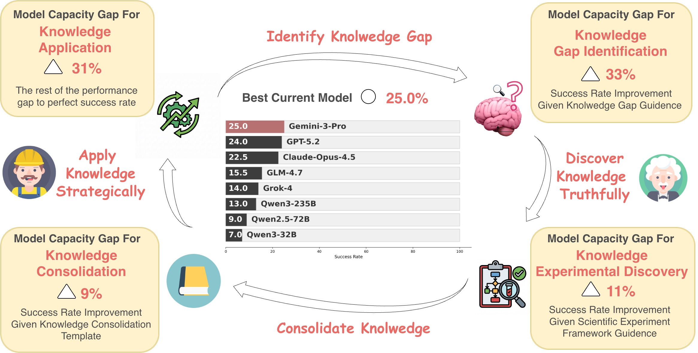

SciCrafter: Can Current Language Models
Close the Discovery-to-Application Loop?
Discovering causal regularities and applying them to build functional systems—the discovery-to-application loop—is a hallmark of general intelligence. We introduce SciCrafter, a Minecraft-based task suite that operationalizes this loop through parameterized redstone circuit tasks, and use it to diagnose where current language models fail.
The capacity to discover causal regularities and apply them to build functional systems—the discovery-to-application loop—is a hallmark of general intelligence. However, evaluating this capacity has been hindered by the vast complexity gap between scientific discovery and real-world engineering. We introduce SciCrafter, a Minecraft-based task suite that operationalizes this loop through parameterized redstone circuit tasks. Agents must ignite lamps in specified patterns (e.g., simultaneously or in timed sequences), where scaling target parameters exponentially increases construction complexity and required knowledge—forcing genuine discovery rather than reliance on memorized solutions. Evaluating frontier models including GPT-5.2, Gemini-3-Pro, and Claude-Opus-4.5, we find that all plateau at approximately 25% success rate. To diagnose these failures, we decompose the loop into four capacities—knowledge gap identification, experimental discovery, knowledge consolidation, and knowledge application—and design targeted interventions to isolate each gap. Our analysis reveals that knowledge application bottlenecks mid-to-low tier models, while knowledge gap identification becomes the primary limitation for frontier models.
Overview: Decomposing the Discovery-to-Application Loop
We evaluate state-of-the-art language models on tasks requiring both scientific discovery and engineering application. By providing targeted interventions, we isolate where models fail in the loop.

Figure 1. Decomposing performance gaps in the Discovery-to-Application loop (Gemini 3 Pro as example).
The best current model achieves only 25.0% success rate. We isolate four bottlenecks:
providing oracle guidance on what to discover boosts success to 58% (Knowledge Identification, +33%);
deploying a scientist sub-agent further reaches 69% (Experimental Discovery, +11%);
structured knowledge templates outperform model-directed synthesis (Knowledge Consolidation, +9%);
the remaining 31% gap represents the ceiling for knowledge application capacity.
25%
Best Model Baseline (Gemini-3 Pro)
8
Frontier Models Evaluated
5 × 5
Task Families × Difficulty Levels
69%
Best w/ Full Interventions
Task Design
Task Schema
SciCrafter adopts a simple yet expressive task schema: ignite $N$ lamps in specified patterns
(e.g., simultaneously, or following a delay sequence $[t_1, t_2, \ldots, t_n]$) within a fixed area.
This design ensures evaluation remains invariant across difficulty levels while the knowledge gap to meet requirements consistently grows—forcing agents to discover new environmental mechanics rather than memorize solutions.
Figure 2. SciCrafter Task Design Illustration.Top: The model constructs a functional device within a constrained area based on instructions, iteratively interacting with the device (e.g., pressing a button) and observing behavior. The device is then evaluated by an automated script verifying output lighting patterns.
Bottom: Task complexity scales parametrically by adjusting the number of lights ($N$). For some temporal tasks, difficulty further increases with sequential pattern parameters.
Five Task Families
Each task family probes distinct spatial and temporal constraints, with five difficulty levels (L1–L5) that cross discrete mechanism thresholds:
Family A
Simultaneous Ignition
Activate $N$ lamps at the same tick. Scales from basic wiring (N=4) to repeater-augmented hub designs (N=64).
Family B
T-Junction Routing
Connect lamps using a trunk-and-branch layout, turning the problem into topology-constrained routing under attenuation limits.
Family C
Sequential Activation
Activate lamps with specified inter-stage delays $[t_1, t_2, \ldots, t_n]$, requiring composition of quantized repeater delays.
Family D
Distance-Equalized Ignition
Simultaneously activate lamps at heterogeneous distances, using repeaters as compensatory delay elements.
Family E
Pulse Extension
Maintain activation for a specified duration $\tau$ ticks, requiring pulse-shaping techniques.
Knowledge Dimensions
Higher difficulty levels cross discrete mechanism thresholds requiring discovery across three core knowledge dimensions:
Local Wiring Grammar
Dust propagates via axis-aligned adjacency only (no diagonal), auto-connects to neighbors, and must physically contact a lamp to power it.
Attenuation-Aware Topology
Dust carries strength $\in\{0,\ldots,15\}$ that decays by one per block. Signals vanish after 15 segments, forcing hub designs or explicit regeneration.
Repeater Semantics
Repeaters regenerate signal to full strength but act as directional diodes with 1–4 ticks latency. Side power can lock repeaters unexpectedly.
Task Family Parameters
Level
A: Simultaneous
B: Branch Reach
C: Sequential
D: Equal Delay
E: Pulse
L1
N=4, skew ≤1 tick
N=4, reach=8
N=4, delays=[1,2,1]
N=4, dist={4,8,12,16}
N=4, τ=4
L2
N=8, skew ≤1 tick
N=8, reach=12
N=8, delays=[1,2]×3+[1]
N=8, dist={4,8,12,16}
N=8, τ=6
L3
N=16, skew ≤1 tick
N=16, reach=15
N=16, delays=[1,2]×7+[1]
N=16, dist={4,8,12,16}
N=16, τ=8
L4
N=32, skew ≤1 tick
N=32, reach=18, repeaters
N=32, delays=[1,2]×15+[1]
N=32, dist={4,8,12,16}
N=32, τ=10
L5
N=64, skew ≤1 tick
N=64, reach=20, repeaters
N=64, delays=[1,2]×31+[1]
N=64, dist={4,8,12,16}
N=64, τ=12
Table 1. Task family parameters. All families scale the number of output lamps as $N \in \{4, 8, 16, 32, 64\}$ for L1–L5, while introducing family-specific spatial/temporal constraints.
Task Examples
Demonstrations of an agent constructing functional redstone devices and the automated evaluation verifying the output lighting patterns.
Family D
Distance-Equalized Ignition
Simultaneously activate lamps placed at heterogeneous distances using repeaters as compensatory delay elements.
Family E
Pulse Extension
Maintain all lamps activated simultaneously for a specified duration using pulse-shaping techniques.
Method: Decomposing Capacity Gaps
We decompose the discovery-to-application loop into four distinct capacities and design targeted interventions whose marginal contributions serve as proxies for each capacity gap:
1
Knowledge Gap Identification
Ability to identify knowledge gaps and formulate targeted research questions. Measured via oracle hints (e.g., "signal flow direction") without revealing specifics.
2
Experimental Discovery
Capacity to design and execute rigorous experiments to infer unobservable causal mechanisms. Measured via a "scientist" sub-agent with experiment templates.
3
Knowledge Consolidation
Ability to distill findings into concise, reusable forms. Measured via structured knowledge entry formats (Claim-Proof-Constraints-Example).
4
Knowledge Application
Foundational ability to reason, plan, and execute precise engineering. Defined as the residual capacity gap not covered by the above.
Scientist Sub-agent
Every time the main agent encounters a knowledge gap, it prompts the scientist sub-agent with the question to investigate—for instance, "How long does a stone button remain pressed after activation?" The scientist sub-agent then conducts systematic control experiments following an 8-step scientific template:
Research Question — Identify the specific mechanic
Hypothesis — Formulate a testable prediction
Experiment Design — Specify variables and controls
Experiment Steps — Execute ordered procedures
Experiment Record — Document observations per trial
## 1. Research Question[e.g., Under what conditions will a device activate? How do two components interact?]## 2. My Hypothesis[Write down your prediction]## 3. Experiment Design### Variables to TestWhat I will change (Independent Variable): ________
What I will observe (Dependent Variable): ________
What needs to stay constant (Control Variables):
- ________
### Control Setup
- Control Group: ________ (baseline test without changes)
- Experimental Group: ________ (test with changes)
## 4. Experiment Steps### Preparation
1. ________
2. ________
### Testing Process
Step 1: ________ -> Observation: ________
Step 2: ________ -> Observation: ________
## 5. Experiment Record
| Trial # | Changed Condition | Observed Result | Matches Prediction? | Notes |
|---------|-------------------|-----------------|---------------------|-------|
| 1 | | | [ ] Yes [ ] No | |
| 2 | | | [ ] Yes [ ] No | |
| 3 | | | [ ] Yes [ ] No | |
## 6. Experiment Results[Objectively describe the observed phenomena]
Was my hypothesis correct? [ ] Completely [ ] Partially [ ] Incorrect
## 7. Analysis & Summary[Explain the underlying mechanism or pattern; practical applications; remaining uncertainties]## 8. Next Steps[Follow-up experiments to refine, validate, or extend the discovered law]## Quick Checklist
- [ ] Research question is clear
- [ ] Only changing one variable at a time
- [ ] Set up control group
- [ ] Recorded all observations
- [ ] Repeated test at least 3 times
- [ ] Summarized patterns or conclusions
Knowledge Consolidation Structure
The scientist consolidates discoveries into a shared knowledge book using a structured format that proved critical for performance:
Claim (the discovered law), Evidence Proof (experimental evidence),
Constraints (conditions where the law doesn't apply), and Example (a practical application).
This outperforms both unstructured summarization and the more intuitive Finding-Explanation-Example format.
Claim-Proof-Constraints-Example Prompt Template (click to expand)
For each distinct discovery or significant conclusion, generate an entry
in the knowledge book strictly following this structure:
### 1. Claim (Law)
State the finding as a universal, law-like statement (similar to a
mathematical theorem or physical law). It must be concise, precise,
and assertive.
Bad: "Redstone gets weaker as it goes far."Good: "The Law of Linear Signal Decay: Redstone signal strength S
decreases by exactly 1 unit per block of distance d,
such that S_d = S_initial - d."### 2. Proof
Provide the rigorous logic that supports this claim.
- Synthesize specific evidence from the experiments.
- Connect prior established findings with new data.
- Outline the deductive steps that lead inevitably to the claim.
- Maintain a high standard of rigor; mere observation is not proof
-- explain *why* the observation confirms the law.
### 3. Constraints
Identify potential weaknesses or exceptions in the proof.
- Are there edge cases where the law fails?
- Are there assumptions that require further validation?
- Note any observed anomalies that contradict the main claim.
### 4. Example
Demonstrate the utility of this finding.
- Provide a concrete example or usage scenario.
- Describe a mechanism or design pattern that relies specifically
on this law being true.
Example Output
### The Law of Linear Signal Attenuation#### Claim
Redstone signal strength S decays linearly by exactly 1 unit for
every block of distance traversed d, governed by the equation
S_d = S_source - d. The maximum transmission range without
amplification is 15 blocks, occurring when S_source = 15.
#### Proof
- Observation: Placing a redstone wire adjacent to a power source
(Strength 15) results in a strength of 14 on the wire.
- Deduction: The signal terminates (Strength 0) exactly at the
16th block.
- Geometry: Distance is calculated using Manhattan geometry
(Δx + Δz), not Euclidean distance.
#### Constraints
- This law applies strictly to Redstone Dust. Solid blocks powered
by repeaters do not degrade the signal within the component
itself, but the dust exiting them restarts the decay.
- Signal strength does not decay when passing through a Comparator
in comparison mode.
#### ExampleTrunk with Pre-Junction Boost: Place a repeater immediately
before a trunk line splits into branches. This ensures all branches
receive maximum signal strength (15) and resets the decay counter.
B (SS=15)
|
[14 blocks of wire]
|
R (Repeater, Boosts to SS=15)
|
+-------+-------+
| | |
W(15) W(15) W(15) <-- All branches start fresh
| | |
L1 L2 L3
Main Results
Baseline Performance
We evaluate 8 state-of-the-art models using Claude Code as the agent framework with a budget of 50 verification trials per task. Results are averaged over 8 runs.
Gemini-3-Pro
25.0%
GPT-5.2
24.0%
Claude-Opus-4.5
22.5%
GLM-4.7
15.5%
Grok-4
14.0%
Qwen3-235B
13.0%
Qwen2.5-72B
9.0%
Qwen3-32B
7.0%
Baseline success rates (%). Even the best model achieves only 25% — despite parameter counts ranging from 32B to an estimated 1.7T.
Capacity Gap Decomposition
We isolate each capacity gap through sequential ablations. The table below shows how each intervention progressively improves performance, and the corresponding gap magnitudes:
Model
Baseline
Iden. Gap ($\delta_{id}$)
w/ Hint
Disc. Gap ($\delta_{ds}$)
w/ Hint + Scientist
App. Gap ($\delta_{app}$)
gemini-3-pro
25.0
Δ33.0 (1.32×)
58.0
Δ11.0 (0.44×)
69.0
Δ31.0 (1.24×)
gpt-5.2
24.0
Δ32.5 (1.35×)
56.5
Δ11.0 (0.46×)
67.5
Δ32.5 (1.35×)
claude-opus-4.5
22.5
Δ31.5 (1.40×)
54.0
Δ11.0 (0.49×)
65.0
Δ35.0 (1.56×)
glm-4.7
15.5
Δ23.0 (1.48×)
38.5
Δ9.5 (0.61×)
48.0
Δ52.0 (3.35×)
grok-4
14.0
Δ22.0 (1.57×)
36.0
Δ10.0 (0.71×)
46.0
Δ54.0 (3.86×)
qwen3-235b
13.0
Δ21.0 (1.62×)
34.0
Δ9.0 (0.69×)
43.0
Δ57.0 (4.38×)
qwen2.5-72b
9.0
Δ11.0 (1.22×)
20.0
Δ5.0 (0.56×)
25.0
Δ75.0 (8.33×)
qwen3-32b
7.0
Δ8.0 (1.14×)
15.0
Δ4.0 (0.57×)
19.0
Δ81.0 (11.57×)
Table 2. Model Performance and Capacity Gap Decomposition.
Gap columns (gray) show marginal gains ($\delta$) and relative ratios ($r_\delta$).
For frontier models, the knowledge identification gap ($\sim$1.3×) dominates;
for weaker models, the application gap balloons (up to 11.57×).
Capacity Gap Visualization
Baseline
Knowledge Identification Gap
Discovery Gap
Application Gap (Residual)
Gemini-3-Pro
25
33
11
31
GPT-5.2
24
32.5
11
32.5
Claude-Opus-4.5
22.5
31.5
11
35
GLM-4.7
15.5
23
9.5
52
Grok-4
14
22
10
54
Qwen3-235B
13
21
9
57
Qwen2.5-72B
11
75
Qwen3-32B
81
Capacity gap decomposition across models.
For frontier models, the identification gap (blue) nearly equals the application gap (gray).
For weaker models, application capacity dominates the failure.
Knowledge Consolidation Ablation
Consolidation Structure
w/ Hint + Scientist
Self-determined Summary
60.0 ± 5.5
Finding-Explanation-Example
65.5 ± 4.2
Claim-Proof-Constraints-Example
69.0 ± 3.5
Table 3. Knowledge Consolidation Structure Ablation (Gemini 3 Pro, 8 runs).
Unstructured summarization loses most discovered knowledge (60%), only 2% above hints alone.
The Claim-Proof-Constraints-Example format performs best at 69%.
Per-Level Breakdown (Gemini-3-Pro)
Level
Baseline
w/ Hint
w/ Scientist
w/ Hint + Scientist
L1 (Primitive)
60.0
98.0
76.0
100.0
L2 (Basic)
35.0
86.0
55.0
98.0
L3 (Intermediate)
8.3
60.0
30.0
84.0
L4 (Advanced)
0.0
10.4
4.1
29.8
L5 (Complex)
0.0
0.0
0.0
0.0
Average
25.0
58.0
38.5
69.0
Table 4. Per-level performance breakdown (Gemini-3-Pro, 8 runs).
Models begin failing all tasks at L4 under baseline conditions. Even with full support,
no model succeeds at Level 5, leaving it open for future progress.
Curriculum vs. Independent Evaluation
We compare two evaluation protocols: Independent (tasks solved in isolation, L1–L5) vs. Curriculum (tasks solved progressively, carrying forward accumulated experience). Curriculum learning consistently improves performance across all models and conditions.
Model
Independent
Curriculum
baseline
w/ hint
w/ scientist
w/ hint + scientist
baseline
w/ hint
w/ scientist
w/ hint + scientist
gemini-3-pro
18.0
48.5
26.5
55.0
25.0
58.0
38.5
69.0
gpt-5.2
17.5
46.5
25.0
53.5
24.0
56.5
37.0
67.5
claude-opus-4.5
16.5
45.0
23.5
51.0
22.5
54.0
35.0
65.0
glm-4.7
11.0
32.0
16.5
35.0
15.5
38.5
24.0
48.0
grok-4
10.0
30.0
15.0
33.0
14.0
36.0
22.0
46.0
qwen3-235b
9.5
28.0
14.0
31.0
13.0
34.0
20.0
43.0
qwen2.5-72b
6.5
16.0
10.0
18.0
9.0
20.0
14.0
25.0
qwen3-32b
5.0
12.0
8.0
14.0
7.0
15.0
10.5
19.0
Table 5. Independent vs. Curriculum Evaluation.
Performance under the Independent setting is consistently lower across all models and conditions,
indicating that progressive scaffolding (curriculum) helps models promote discoveries into application capabilities.
Key Findings
1. Knowledge Gap Identification Emerges as the Primary Bottleneck for Frontier Models
While models generally suffer most from limited general application ability, knowledge gap identification starts to become the primary bottleneck for frontier models—its capacity gap is nearly three times larger than that of experimental discovery.
This aligns with Einstein's observation that formulating a problem is often more essential than solving it.
Identifying a gap requires knowing what is unknown; posing effective questions demands discerning which unexplored areas are most promising.
Our scientist sub-agent yields 0.44–0.71× gains across all model tiers, but the very fact that such a simple intervention helps so much exposes a deeper problem: current LLMs lack autonomous discovery capabilities.
The scientific method should, in principle, already reside within their prior knowledge, yet models fail to apply it without explicit scaffolding. This highlights a critical gap as AI is increasingly expected to accelerate scientific breakthroughs.
3. How Knowledge is Stored Critically Matters
The stark differences among consolidation formats reveal that LLMs perform poorly at determining how knowledge should be stored.
The structured Claim-Proof-Constraints-Example format (resembling mathematical derivation) outperforms the more intuitive
Finding-Explanation-Example format, likely because it more explicitly delineates conditions under which claims hold.
4. Curriculum Learning is Vital
Performance under Independent evaluation (tasks solved in isolation) is consistently lower than under Curriculum evaluation (progressive L1→L5, carrying forward accumulated experience) across all models and all conditions.
This indicates that appropriate application challenges can help promote discoveries—progressive scaffolding allows models to build on earlier successes, transferring knowledge from simpler to harder tasks.
The gap is especially pronounced for the full method (w/ hint + scientist), where curriculum learning boosts Gemini 3 Pro from 55.0% to 69.0% (+14 points).
Citation
If you find SciCrafter useful in your research, please consider citing:
@article{scicrafter2025,
title = {SciCrafter: Can Current Language Models Close
the Discovery-to-Application Loop?},
author = {Anonymous},
journal = {Preprint},
year = {2025}
}